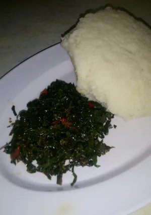

Ugali with sukuma wiki is a popular traditional Kenyan meal made from maize flour cooked into a firm, dough-like consistency and served with leafy greens sautéed with onions and tomatoes.
It is a simple, nutritious, and satisfying dish enjoyed in many East African households.
4 Servings
Time: 35-45 minutes